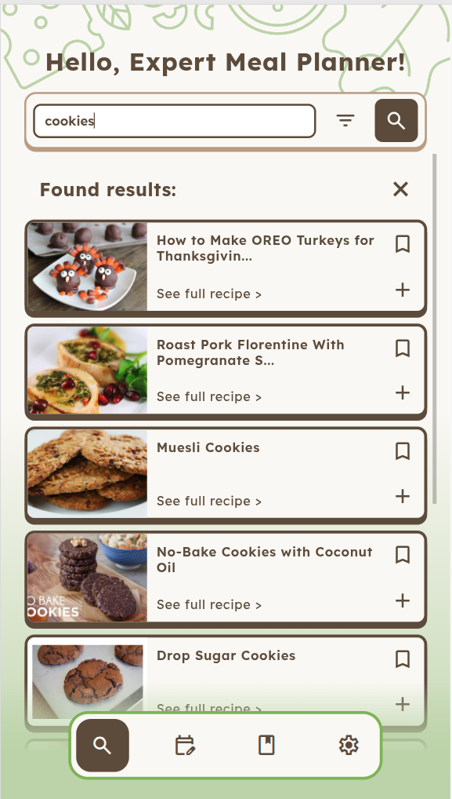
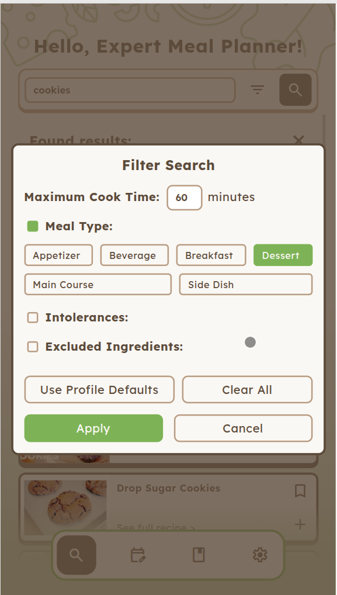
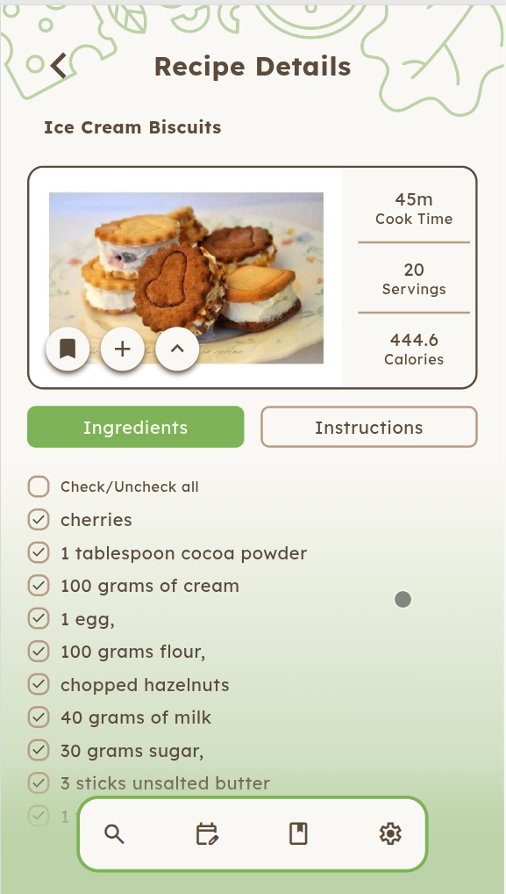
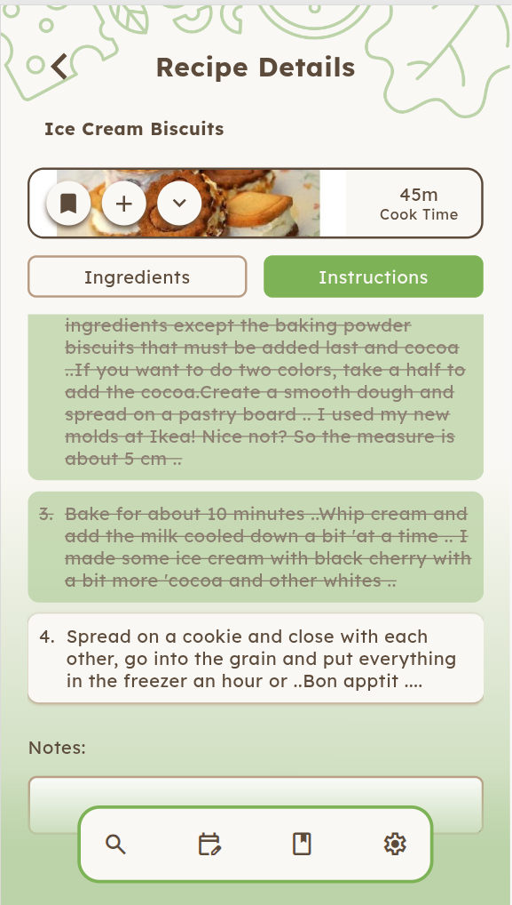
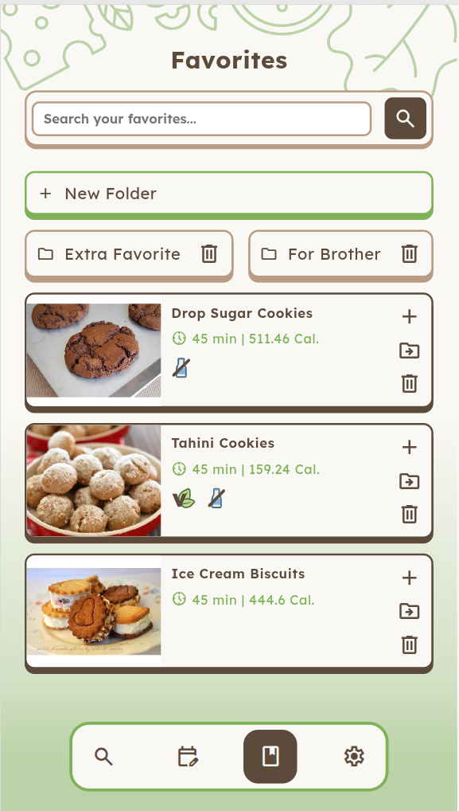
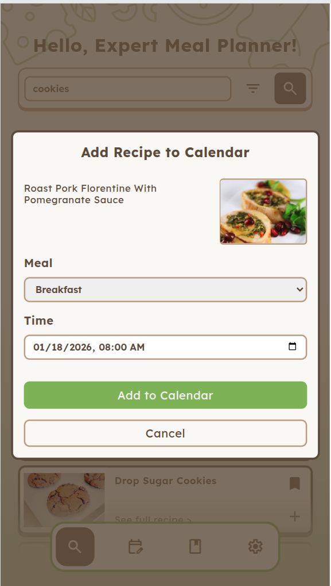
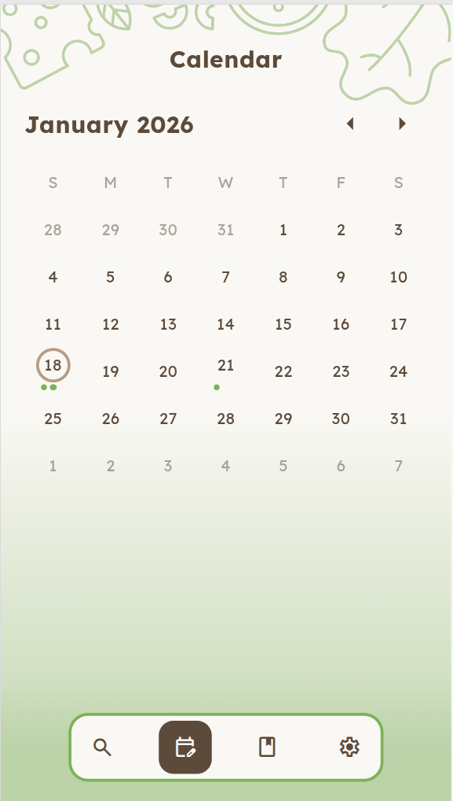
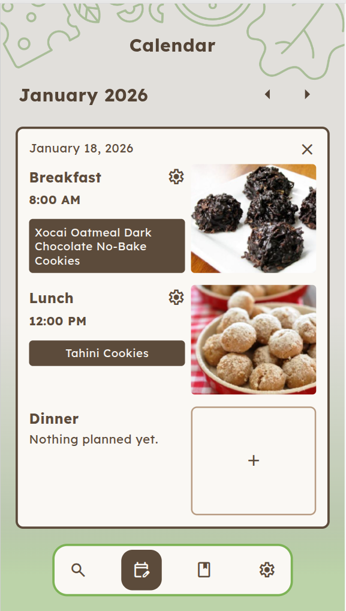
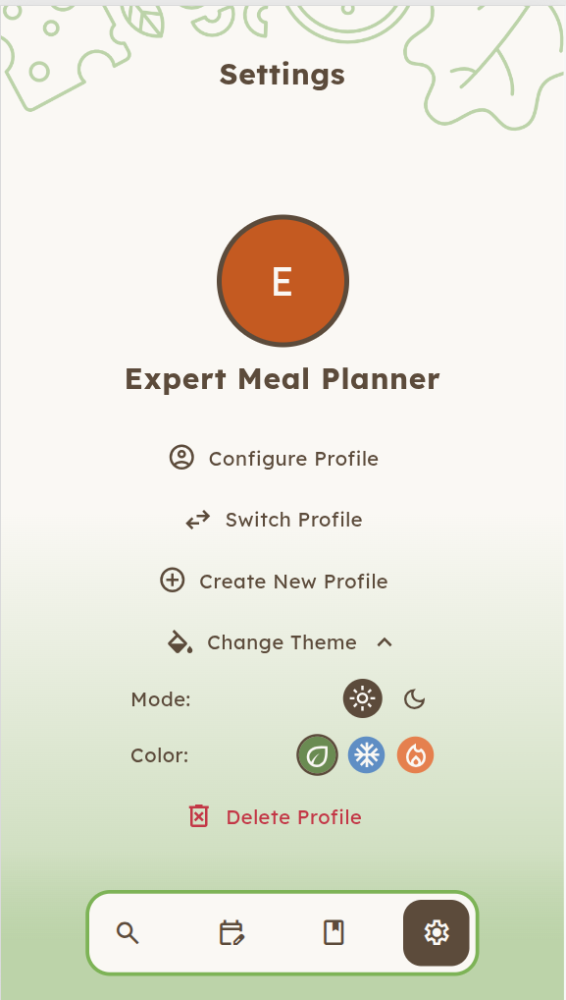
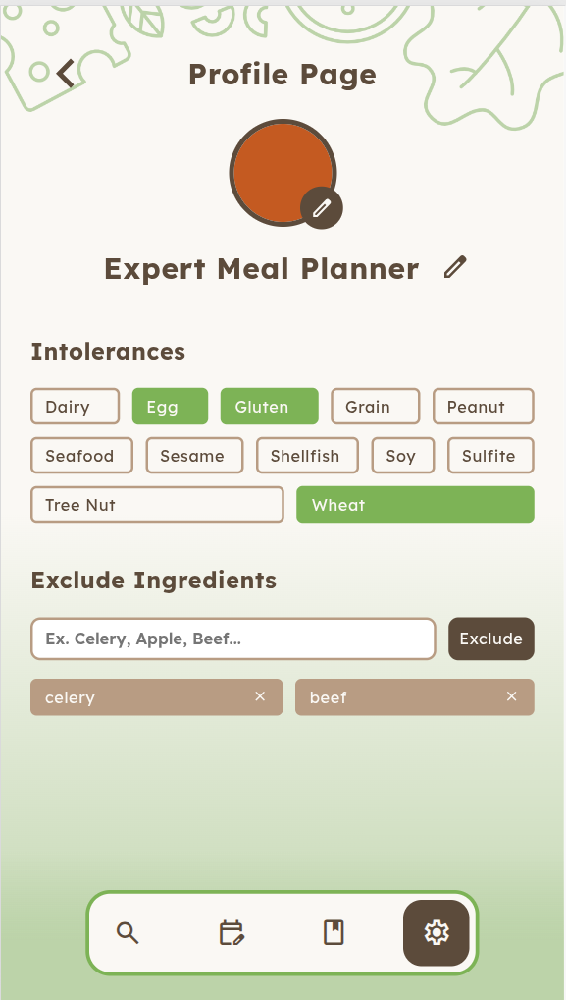
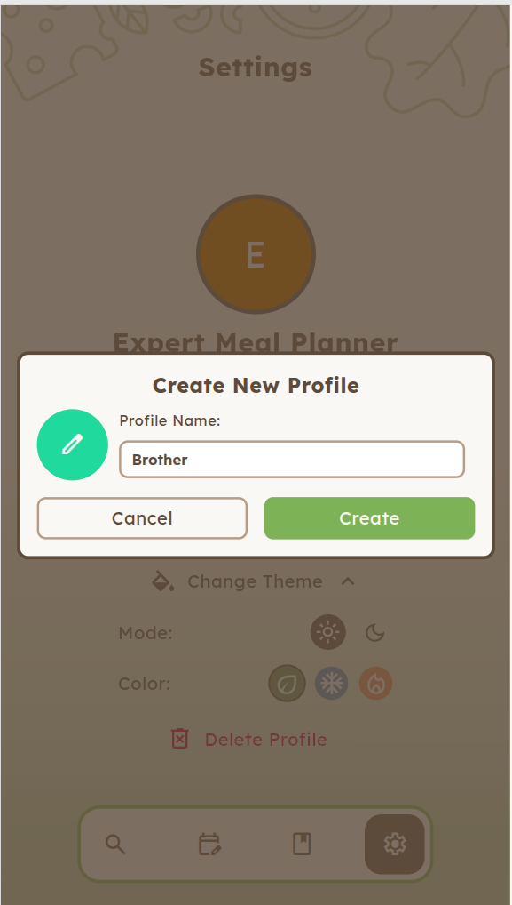
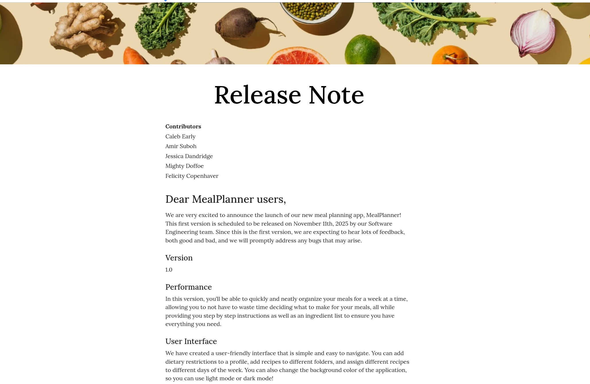
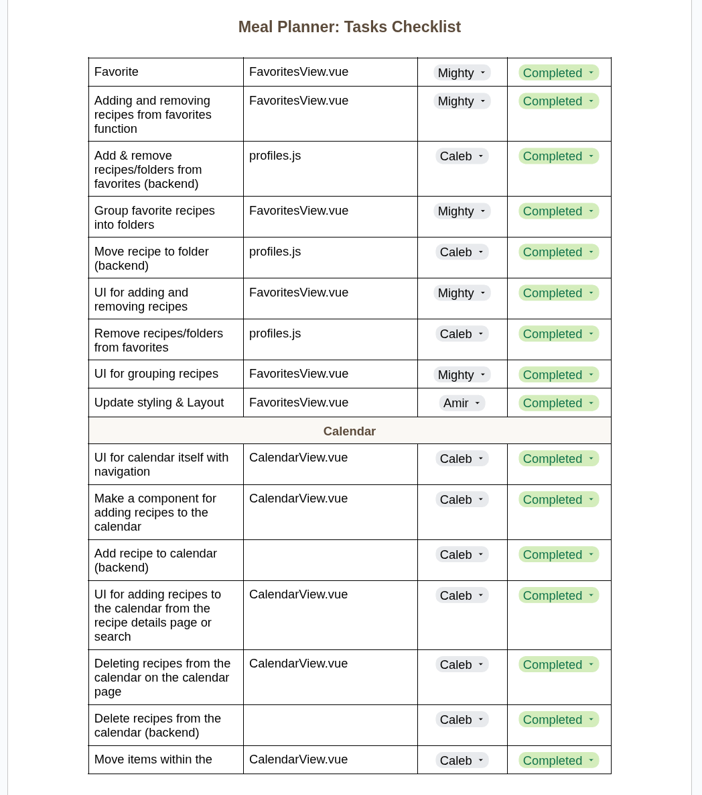
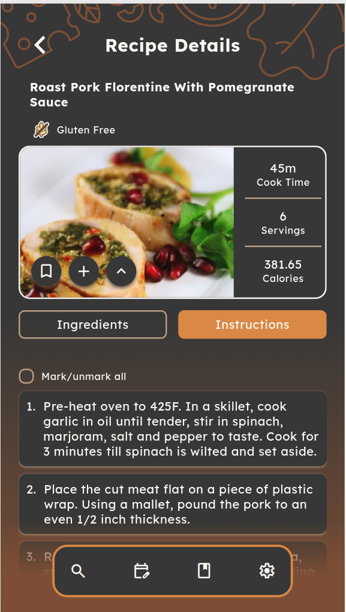
Collaborative project built in a diverse five-person team for our Software Engineering course. This artifact reflects my growth in communication, adaptability, and team-based decision-making.
Website (Only for mobile):
https://mealplanner.claebcode.top